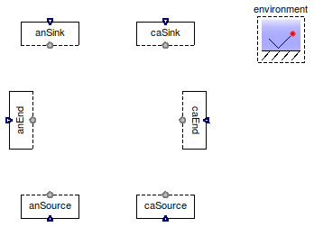
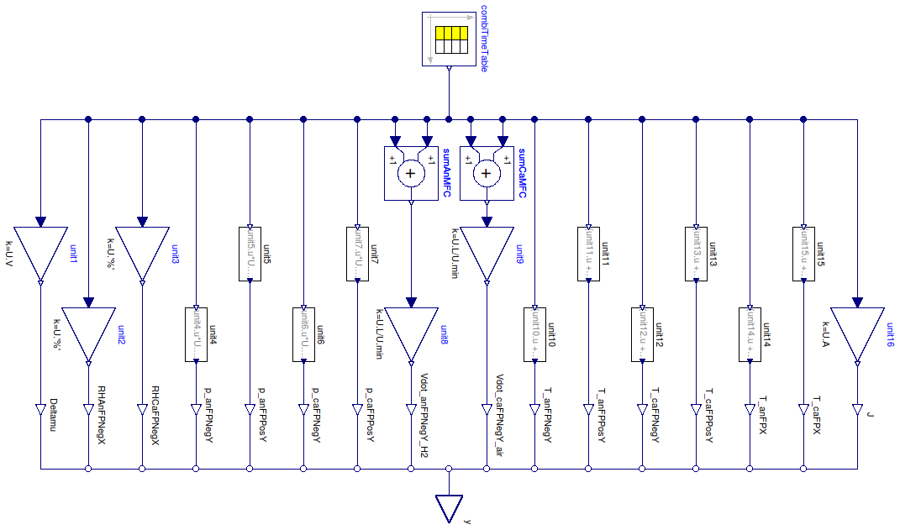

Table of Contents
- User's Guide
- BCs
- Sensors
- Assemblies
- Regions
- Subregions
- Connectors
- Characteristics
- Units
- Quantities
- BaseClasses
Download
- Latest: FCSys-2.0.zip (**Please check back soon or contact kdavies4 at gmail.com.)

| Name | Description |
|---|---|
| Cell test profile | |
| Regenerate signals recorded from HNEI's Greenlight FC test stand | |
| Base classes (not for direct use) |
 FCSys.BCs.TestStands.TestProfile
FCSys.BCs.TestStands.TestProfile
model TestProfile "Cell test profile" extends Modelica.Icons.Example; extends FCSys.BCs.TestStands.BaseClasses.PartialTestStandNoIO;end TestProfile;
 FCSys.BCs.TestStands.Replay
FCSys.BCs.TestStands.Replay
| Type | Name | Default | Description |
|---|---|---|---|
| Integer | n | 1 | index of the data set |
| Boolean | terminateMaxTime | true | Terminate at maximum time of source data |
| Type | Name | Description |
|---|---|---|
| RealOutputBus | y | Output signals as a bus |
model Replay "Regenerate signals recorded from HNEI's Greenlight FC test stand" extends FCSys.BaseClasses.Icons.Blocks.ContinuousShort; parameter Integer n(final min=1) = 1 "index of the data set"; parameter Boolean terminateMaxTime=true "Terminate at maximum time of source data";Modelica.Blocks.Sources.CombiTimeTable combiTimeTable( tableOnFile=true, extrapolation=Modelica.Blocks.Types.Extrapolation.HoldLastPoint, tableName="data" + String(n), fileName="FCSys/test/LOOCV/data.mat", columns=2:19, smoothness=Modelica.Blocks.Types.Smoothness.LinearSegments) "Block to load and replay data"; FCSys.Connectors.RealOutputBus y "Output signals as a bus"; protected Modelica.Blocks.Math.Add sumAnMFC; Modelica.Blocks.Math.Add sumCaMFC; Modelica.Blocks.Math.Gain unit1(k=U.V); Modelica.Blocks.Math.Gain unit2(k=U.'%'); Modelica.Blocks.Math.Gain unit3(k=U.'%'); FCSys.BCs.BaseClasses.RealFunction unit4(y=unit4.u*U.kPa + U.atm); FCSys.BCs.BaseClasses.RealFunction unit5(y=unit5.u*U.kPa + U.atm); FCSys.BCs.BaseClasses.RealFunction unit6(y=unit6.u*U.kPa + U.atm); FCSys.BCs.BaseClasses.RealFunction unit7(y=unit7.u*U.kPa + U.atm); Modelica.Blocks.Math.Gain unit8(k=U.L/U.min); Modelica.Blocks.Math.Gain unit9(k=U.L/U.min); FCSys.BCs.BaseClasses.RealFunction unit10(y=(unit10.u + 273.15)*U.K); FCSys.BCs.BaseClasses.RealFunction unit11(y=(unit11.u + 273.15)*U.K); FCSys.BCs.BaseClasses.RealFunction unit12(y=(unit12.u + 273.15)*U.K); FCSys.BCs.BaseClasses.RealFunction unit13(y=(unit13.u + 273.15)*U.K); FCSys.BCs.BaseClasses.RealFunction unit14(y=(unit14.u + 273.15)*U.K); FCSys.BCs.BaseClasses.RealFunction unit15(y=(unit15.u + 273.15)*U.K); Modelica.Blocks.Math.Gain unit16(k=U.A); FCSys.Connectors.RealOutputInternal Deltamu(final unit="l2.m/(N.T2)") "CVM Cell 1 Voltage"; FCSys.Connectors.RealOutputInternal RHAnFPNegX( final unit="1", displayUnit="%", final min=0) "Anode inlet RH"; FCSys.Connectors.RealOutputInternal RHCaFPNegX( final unit="1", displayUnit="%", final min=0) "Cathode inlet RH"; FCSys.Connectors.RealOutputInternal p_anFPNegY(final unit="m/(l.T2)") "Pressure anode inlet"; FCSys.Connectors.RealOutputInternal p_anFPPosY(final unit="m/(l.T2)", final min=0) "Pressure anode outlet"; FCSys.Connectors.RealOutputInternal p_caFPNegY(final unit="m/(l.T2)") "Pressure cathode inlet"; FCSys.Connectors.RealOutputInternal p_caFPPosY(final unit="m/(l.T2)", final min=0) "Pressure anode outlet"; FCSys.Connectors.RealOutputInternal Vdot_anFPNegY_H2(final unit="l3/T") "Flow anode H2 MFC"; FCSys.Connectors.RealOutputInternal Vdot_caFPNegY_air(final unit="l3/T") "Flow cathode H2 MFC"; FCSys.Connectors.RealOutputInternal T_anFPNegY( final unit="l2.m/(N.T2)", displayUnit="K", final min=0) "Temperature anode inlet"; FCSys.Connectors.RealOutputInternal T_anFPPosY( final unit="l2.m/(N.T2)", displayUnit="K", final min=0) "Temperature anode outlet"; FCSys.Connectors.RealOutputInternal T_caFPNegY( final unit="l2.m/(N.T2)", displayUnit="K", final min=0) "Temperature cathode inlet"; FCSys.Connectors.RealOutputInternal T_caFPPosY( final unit="l2.m/(N.T2)", displayUnit="K", final min=0) "Temperature cathode outlet"; FCSys.Connectors.RealOutputInternal T_anFPX( final unit="l2.m/(N.T2)", displayUnit="K", final min=0) "Temperature end plate anode"; FCSys.Connectors.RealOutputInternal T_caFPX( final unit="l2.m/(N.T2)", displayUnit="K", final min=0) "Temperature end plate cathode"; FCSys.Connectors.RealOutputInternal J(final unit="N/T") "Measured load"; equation // Terminate as desired if terminateMaxTime then when time > combiTimeTable.t_max then terminate("The end of the data has been reached."); end when; end if; // Connections from source to unit conversionconnect(unit1.u, combiTimeTable.y[1]); connect(unit2.u, combiTimeTable.y[2]); connect(unit3.u, combiTimeTable.y[3]); connect(unit4.u, combiTimeTable.y[4]); connect(unit5.u, combiTimeTable.y[5]); connect(unit6.u, combiTimeTable.y[6]); connect(unit7.u, combiTimeTable.y[7]); connect(sumAnMFC.u1, combiTimeTable.y[8]); connect(sumAnMFC.u2, combiTimeTable.y[9]); connect(sumCaMFC.u1, combiTimeTable.y[10]); connect(sumCaMFC.u2, combiTimeTable.y[11]); connect(unit10.u, combiTimeTable.y[12]); connect(unit11.u, combiTimeTable.y[13]); connect(unit12.u, combiTimeTable.y[14]); connect(unit13.u, combiTimeTable.y[15]); connect(unit14.u, combiTimeTable.y[16]); connect(unit15.u, combiTimeTable.y[17]); connect(unit16.u, combiTimeTable.y[18]); // Connections from unit conversion to internal outputsconnect(Deltamu, unit1.y); connect(RHAnFPNegX, unit2.y); connect(RHCaFPNegX, unit3.y); connect(p_anFPNegY, unit4.y); connect(p_anFPPosY, unit5.y); connect(p_caFPNegY, unit6.y); connect(p_caFPPosY, unit7.y); connect(Vdot_anFPNegY_H2, unit8.y); connect(Vdot_caFPNegY_air, unit9.y); connect(T_anFPNegY, unit10.y); connect(T_anFPPosY, unit11.y); connect(T_caFPNegY, unit12.y); connect(T_caFPPosY, unit13.y); connect(T_anFPX, unit14.y); connect(T_caFPX, unit15.y); connect(J, unit16.y); // Summationsconnect(sumAnMFC.y, unit8.u); connect(sumCaMFC.y, unit9.u); // Connections from internal outputs to public outputconnect(Deltamu, y.Deltamu); connect(RHAnFPNegX, y.RHAnFPNegX); connect(RHCaFPNegX, y.RHCaFPNegX); connect(p_anFPNegY, y.p_anFPNegY); connect(p_anFPPosY, y.p_anFPPosY); connect(p_caFPNegY, y.p_caFPNegY); connect(p_caFPPosY, y.p_caFPPosY); connect(Vdot_anFPNegY_H2, y.Vdot_anFPNegY_H2); connect(Vdot_caFPNegY_air, y.Vdot_caFPNegY_air); connect(T_anFPNegY, y.T_anFPNegY); connect(T_anFPPosY, y.T_anFPPosY); connect(T_caFPNegY, y.T_caFPNegY); connect(T_caFPPosY, y.T_caFPPosY); connect(T_anFPX, y.T_anFPX); connect(T_caFPX, y.T_caFPX); connect(J, y.J); end Replay;